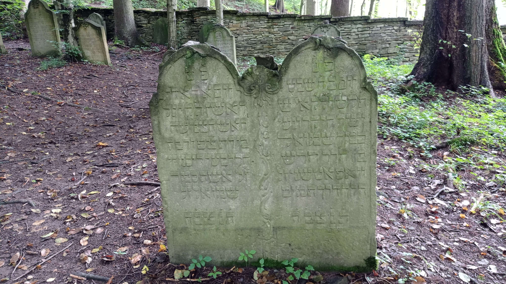

Home
Walkable Cities
History
How You Can Help!
Sources

Sources
Sources for my information:
Statistics for emmisions and walkability
Walkable neighbourhoods
All about walkable cities
Difference from public and private transport
Advantages and disadvantages of publics and private transport